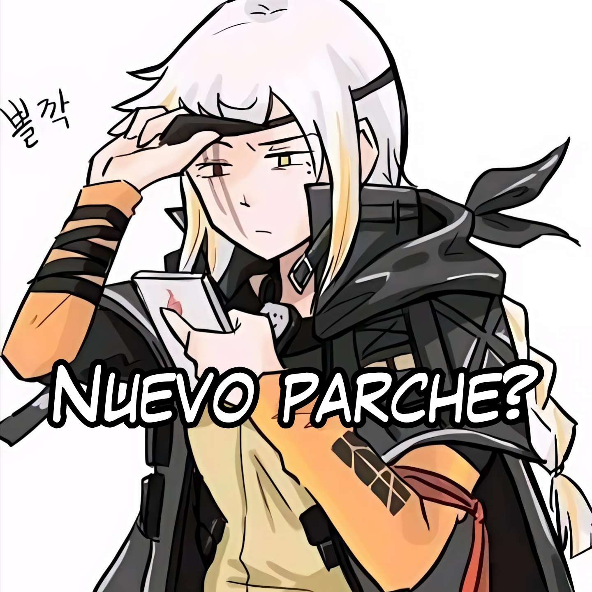

Noticias
¡Nuevo parche 1.1! Lee los detalles.
Nueva Sección de música ya disponible!
El rincón de Aki ya está disponible para que puedas visualizar todo el contenido relevante sobre el proyecto!

Artículos
Bíografía de Walterex, el desarrollador de Moon Center.

La importancia de una audiencia (Una reflexión sobre el desarrollo en conjunto).

Curiosidades sobre la página de Moon Center.
Proyectos y cosas a agregar en Moon Center.

Anime
Información sobre tus Animes favoritos.
Descubre tus Animes Favoritos!

Mangas
Información sobre tus Mangas favoritos.
Descubre tus Mangas favoritos!
Videojuegos
Novedades y análisis sobre tus Videojuegos favoritos.
Aún no se ha publicado información...